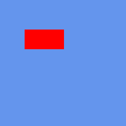
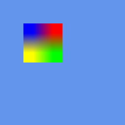
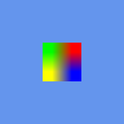
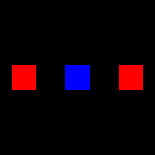

Tutorial 21: SpriteBatch Deep Dive
What you’ll learn
- Every parameter of
SpriteBatch::Begin()and what it actually changes. - All ten
Drawoverloads (seven from XNA, three CNA extensions) and theDrawStringoverloads. - When the batch flushes, and how that drives draw-call count.
- Passing a custom effect into
Begin().
Before you start — Tutorial 06: Drawing Your First 2D Shape, Tutorial 08: Loading and Drawing Textures and Tutorial 09: Drawing Text with SpriteFont — this is the reference pass over the API those three introduced.
SpriteBatch is the primary 2D drawing API in CNA. Internally it accumulates draw calls into a vertex buffer, then flushes to the GPU in the fewest possible draw calls. This tutorial explores every overload of Begin() and Draw(), explains the SpriteSortMode enum, and covers batching performance in depth.
SpriteBatch::Begin() — all parameters
Begin() is a set of eight overloads, not one function with default arguments. The most complete form takes every parameter:
void SpriteBatch::Begin(
SpriteSortMode sortMode,
BlendState blendState, // by value (a const BlendState* twin exists)
const SamplerState* samplerState, // nullptr = LinearClamp
const DepthStencilState* depthStencil, // nullptr = None
const RasterizerState* rasterizerState, // nullptr = CullCounterClockwise
Effect* effect, // nullptr = built-in sprite shader
Matrix transformMatrix // by value; Matrix::Identity when a shorter form is used
);
The shorter overloads are:
| Call | Defaults it fills in |
|---|---|
Begin() | Deferred, AlphaBlend, LinearClamp, no depth, culling counter-clockwise, no effect, identity matrix |
Begin(sortMode, blendState) | the rest as above |
Begin(sortMode, blendState, sampler, depthStencil, rasterizer) | no effect, identity matrix |
Begin(…, rasterizer, effect) | identity matrix |
Begin(…, effect, transformMatrix) | nothing: the full form |
The forms with five or more parameters each have a twin taking const BlendState* instead of a BlendState (pass nullptr for the default AlphaBlend, or the address of your own state). There is no Begin(SpriteSortMode) on its own: if you name a sort mode you also name a blend state. Note the state objects are all const pointers; the preset states, such as SamplerState::PointClamp, are pre-bound and cannot be modified.
sortMode
Controls when sprites are submitted to the GPU and in what order. See Tutorial 25 for details. For most games Deferred (default) gives the best performance.
blendState
Controls how sprite pixels are composited over the existing render target. Common values:
// AlphaBlend (default) — PREMULTIPLIED alpha compositing (expects colour already multiplied by alpha)
spriteBatch_->Begin(SpriteSortMode::Deferred, BlendState::AlphaBlend);
// Additive — for particles, glows
spriteBatch_->Begin(SpriteSortMode::Deferred, BlendState::Additive);
// Opaque — no alpha, overwrites background
spriteBatch_->Begin(SpriteSortMode::Deferred, BlendState::Opaque);
// NonPremultiplied — straight (non-premultiplied) alpha, e.g. a PNG loaded straight from disk
spriteBatch_->Begin(SpriteSortMode::Deferred, BlendState::NonPremultiplied);
These are values, so pass BlendState::AlphaBlend directly. Tutorial 22 explains premultiplied versus straight alpha and building custom blend states.
samplerState
Controls how textures are sampled:
// LinearClamp (default) — bilinear filter, clamp to edge
// PointClamp — nearest-neighbour (pixel art)
// LinearWrap — bilinear + repeat for tiling textures
spriteBatch_->Begin(SpriteSortMode::Deferred, BlendState::AlphaBlend,
&SamplerState::PointClamp, nullptr, nullptr);
effect
Substitute a custom Effect for the built-in sprite shader. A ShaderEffect is CNA's renderer-native CNAEXT path: you supply shader source in the dialect of the active renderer (GLSL for the OpenGL-family renderers, for example, where the vertex shader must declare a mat4 projection uniform that SpriteBatch sets on whichever program is bound, and the fragment shader must write a vec4). Only renderers that execute shader source can run it, so query GraphicsCapability::CustomEffects first; Tutorial 52 has the per-renderer picture.
This snapshot can also run XNA/FNA Effect Framework binaries through SpriteBatch wherever GraphicsCapability::CompiledEffects is true. That is always the case on FNA3D, and on 13 more renderer identities in 9 families once you enable that family's CMake option (each option defaults to OFF, so a default configure reports it on FNA3D only). That separate path accepts compiled .fxb/XNB payloads, not HLSL .fx source, DXBC or MGFX at run time; .fx source can be compiled to an .xnb at build time with the cna-content tool and an external legacy fxc. See Tutorial 128.
spriteBatch_->Begin(SpriteSortMode::Deferred,
BlendState::AlphaBlend, nullptr, nullptr, nullptr,
grayscaleEffect_.get());
SpriteSortMode enum
| Value | When sprites flush | Sort order |
|---|---|---|
Deferred | At End() | Draw call order |
Immediate | Each Draw() call | Draw call order |
Texture | At End() | By texture object (minimise texture switches) |
BackToFront | At End() | Descending by layerDepth (back first) |
FrontToBack | At End() | Ascending by layerDepth (front first) |
Draw() — all ten overloads
There are seven XNA overloads (1–7) and three CNA extensions (8–10). Every overload takes the texture as a const Texture2D&, so if you hold it through a pointer or a std::optional, dereference it (*tex). The source rectangle is a std::optional<Rectangle>: pass a Rectangle for a sub-region or std::nullopt for the whole texture.
// 1. Position only
sb.Draw(tex, Vector2(x, y), Color::White);
// 2. Position + source rectangle (sprite sheet region)
sb.Draw(tex, Vector2(x, y), sourceRect, Color::White);
// 3. Destination rectangle (scale to fit)
sb.Draw(tex, destRect, Color::White);
// 4. Destination + source rectangle
sb.Draw(tex, destRect, sourceRect, Color::White);
// 5. Full control: position, source, color, rotation, origin, scale, effects, depth
sb.Draw(tex,
position, // Vector2
sourceRect, // std::optional<Rectangle>
color, // Color
rotation, // float — radians
origin, // Vector2 — pivot point relative to source rect
scale, // float — uniform scale
SpriteEffects::None,
layerDepth); // float — 0.0 (front) to 1.0 (back) in BackToFront mode
// 6. As above but scale is a Vector2 (non-uniform)
sb.Draw(tex, position, sourceRect, color, rotation, origin,
Vector2(scaleX, scaleY), SpriteEffects::None, layerDepth);
// 7. Destination rectangle + full control
sb.Draw(tex, destRect, sourceRect, color, rotation, origin,
SpriteEffects::None, layerDepth);
// --- CNA extensions (not in XNA 4.0) ---
// 8. Position as two floats
sb.Draw(tex, x, y);
// 9. Destination + a plain (non-optional) source rectangle
sb.Draw(tex, destRect, sourceRect, color);
// 10. Destination + plain source rectangle + rotation, origin, effects, depth
sb.Draw(tex, destRect, sourceRect, color, rotation, origin,
SpriteEffects::None, layerDepth);
Overloads 8–10 are marked CNAEXT in the headers; if you want code that also compiles against real XNA, stay with 1–7. There is no overload that takes a smart pointer: *texShared for a std::shared_ptr<Texture2D>.
SpriteEffects
// Flip horizontally (mirror left-right)
sb.Draw(tex, pos, std::nullopt, Color::White, 0.0f, Vector2::Zero,
1.0f, SpriteEffects::FlipHorizontally, 0.0f);
// Flip vertically
sb.Draw(tex, pos, std::nullopt, Color::White, 0.0f, Vector2::Zero,
1.0f, SpriteEffects::FlipVertically, 0.0f);
// Both
sb.Draw(tex, pos, std::nullopt, Color::White, 0.0f, Vector2::Zero,
1.0f,
SpriteEffects::FlipHorizontally | SpriteEffects::FlipVertically,
0.0f);
Position, rotation and flip, as the real XNA runtime drew them
These four frames come from CNA's XNA oracle corpus (tools/xna-oracle/, 39 scenes): output of the genuine Microsoft XNA 4.0 runtime, captured under Wine + DXVK on Linux. CNA's DIRECTX9 renderer is recorded as matching them at --tolerance 0 (every channel of every pixel), a check that is run by hand on the project’s reference machine, not in CI. They exercise the Draw() arguments described above.

The simplest overload — texture plus position, no rotation, no effects. Real XNA 4.0 output; recorded as pixel-identical to CNA's DIRECTX9 renderer.

A non-zero rotation about the given origin. Real XNA 4.0 output; recorded as pixel-identical to CNA's DIRECTX9 renderer.

SpriteEffects::FlipHorizontally — the source is sampled mirrored, so the colour layout reverses. Real XNA 4.0 output; recorded as pixel-identical to CNA's DIRECTX9 renderer.

Sprites from more than one texture inside a single Begin()/End() pair — the batcher splits the draw at each texture change. Real XNA 4.0 output; recorded as pixel-identical to CNA's DIRECTX9 renderer.
DrawString overloads
// 1. String at position
sb.DrawString(*font, "Hello World", Vector2(100, 50), Color::White);
// 2. With rotation, origin, scale, effects, depth
sb.DrawString(*font, "Score: " + std::to_string(score),
position, color,
0.0f, // rotation
Vector2::Zero, // origin
1.0f, // scale
SpriteEffects::None,
0.0f); // layer depth
// 3. Non-uniform scale (Vector2), the same as Draw() overload 6
sb.DrawString(*font, "Wide", position, color, 0.0f, Vector2::Zero,
Vector2(2.0f, 1.0f), SpriteEffects::None, 0.0f);
// 4. System::Text::StringBuilder text (each of the three forms above has one)
sb.DrawString(*font, stringBuilder, position, color);
// Text is UTF-8 in a plain std::string; there is no std::wstring overload.
// A character that the font does not contain (and that its default
// character cannot replace) throws System::ArgumentException.
sb.DrawString(*font, "ゲーム", position, Color::Yellow); // needs those glyphs in the font
That is six DrawString overloads in all: three for std::string (plain, uniform float scale, Vector2 scale) and the same three for StringBuilder. The font parameter is a const SpriteFont&.
Flush and batching behaviour
In Deferred mode (the default) SpriteBatch accumulates all Draw() calls into a CPU-side vertex array. When End() is called it:
- Sorts the accumulated sprite list if the sort mode requires it.
- Groups consecutive sprites by texture to minimise GPU texture-switch overhead.
- Uploads one vertex buffer with all positions/UVs/colours.
- Issues one draw call per texture group.
Sprites are grouped only when they are consecutive with the same texture, so the number of draw calls depends on the order you called Draw(). Draw 1000 sprites from 3 textures grouped by texture and you get 3 GPU draw calls; alternate the textures on every call and you get up to 1000. That is why SpriteSortMode::Texture can be faster than Deferred when you have many different textures interleaved — it sorts them into groups before upload (at the price of losing draw-call order).
Layered drawing with BackToFront
spriteBatch_->Begin(SpriteSortMode::BackToFront, BlendState::AlphaBlend);
// layerDepth 1.0 = back, 0.0 = front
spriteBatch_->Draw(*skyTex, skyPos, std::nullopt, Color::White,
0, Vector2::Zero, 1.0f, SpriteEffects::None, 1.0f);
spriteBatch_->Draw(*mountainTex, mtPos, std::nullopt, Color::White,
0, Vector2::Zero, 1.0f, SpriteEffects::None, 0.8f);
spriteBatch_->Draw(*treeTex, treePos, std::nullopt, Color::White,
0, Vector2::Zero, 1.0f, SpriteEffects::None, 0.5f);
spriteBatch_->Draw(*playerTex, playerPos,std::nullopt, Color::White,
0, Vector2::Zero, 1.0f, SpriteEffects::None, 0.2f);
spriteBatch_->Draw(*hudTex, hudPos, std::nullopt, Color::White,
0, Vector2::Zero, 1.0f, SpriteEffects::None, 0.0f);
spriteBatch_->End();
// Sprites are submitted back → front: sky, mountain, tree, player, HUD
Custom effect in Begin()
This example deliberately uses ShaderEffect with renderer-native source. getContentProperty().Load<std::shared_ptr<Effect>>("Shaders/wavy") is also possible for an XNB containing XNA/FNA D3D9 Effect Framework bytecode when the active renderer supports compiled effects, but that is a renderer-qualified compatibility path rather than an HLSL .fx source compiler. See Tutorial 52.
#include "Microsoft/Xna/Framework/Graphics/ShaderEffect.hpp"
// Three arguments: device, vertex source, fragment source. Not file paths.
auto customFx = std::make_unique<ShaderEffect>(
getGraphicsDeviceProperty(), kWavyVertSrc, kWavyFragSrc);
if (!customFx->IsEffectValid()) {
// The shader did not compile. The constructor does not throw; this is the only signal.
}
spriteBatch_->Begin(SpriteSortMode::Deferred,
BlendState::AlphaBlend, // BlendState
nullptr, // SamplerState
nullptr, // DepthStencilState
nullptr, // RasterizerState
customFx.get()); // Effect*
// All draws in this batch use the custom shader
spriteBatch_->Draw(*backgroundTex, Vector2::Zero, Color::White);
spriteBatch_->End();
Performance rules of thumb
- Minimise Begin()/End() pairs per frame — each pair is at minimum one GPU state change.
- Atlas your textures — sprites from the same atlas sheet are batched in a single draw call.
- Use Deferred for most scenes; switch to
Textureonly when profiling shows texture-switch overhead. - Avoid Immediate — it flushes on every
Draw()call and negates all batching benefits. Only use it when you need to callGraphicsDevicestate-change methods between individual sprite draws. - Draw HUD in a separate Begin()/End() without a camera transform, so world and HUD transforms never mix.